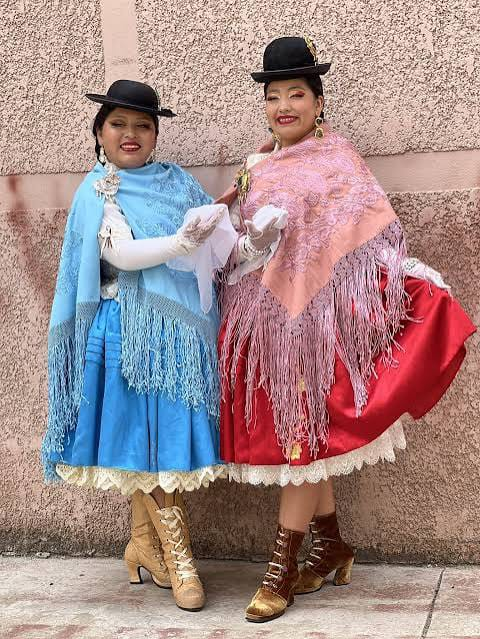
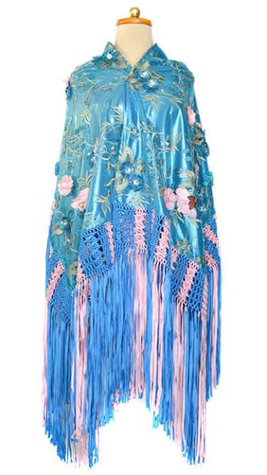
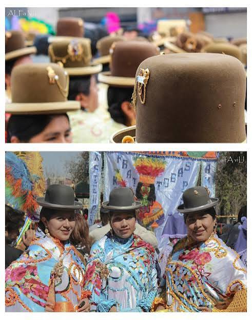
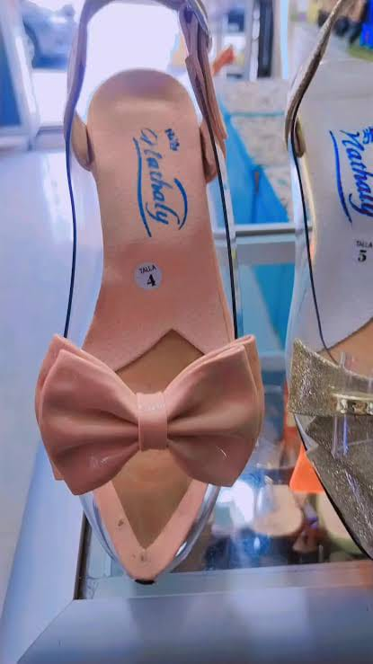

🌺 Vestimenta de la Chola Paceña 🌺
Elegancia, tradición e identidad cultural de La Paz.
La chola paceña es una de las figuras más representativas de la cultura de La Paz. Su vestimenta tradicional se caracteriza por la pollera, la manta, el sombrero bombín, la blusa y otros accesorios. Cada prenda representa una historia de tradición, identidad y orgullo cultural que continúa presente en la sociedad boliviana.

1. Pollera
Es una falda amplia y con bastante vuelo, generalmente formada por varias capas de tela y pliegues. Puede presentar diferentes colores y diseños. Es una de las prendas más representativas de la chola paceña y expresa identidad y pertenencia cultural.

2. Manta
Se coloca sobre los hombros y ayuda a proteger del frío. Puede tener bordados, tejidos, flecos y adornos decorativos. Sus colores y diseños complementan la pollera y aportan elegancia al conjunto.

3. Sombrero bombín
Es uno de los elementos más reconocidos de la vestimenta de la chola paceña. Tiene una copa redondeada y una forma característica. Aunque tiene origen extranjero, fue adoptado por las mujeres paceñas y se convirtió en un símbolo de su identidad cultural.
4. Blusa
Complementa la vestimenta y puede presentar encajes, bordados, botones y detalles decorativos. Se combina con la pollera y la manta para formar un conjunto tradicional y elegante.

5. Enaguas
Son prendas interiores que se utilizan debajo de la pollera. Ayudan a darle volumen y forma a la falda. Su cantidad y estilo pueden variar según la vestimenta y la ocasión.

6. Zapatos
Completan el conjunto tradicional. Pueden ser zapatos de tacón bajo o medio, con diferentes diseños y materiales. Su estilo varía según la ocasión y las preferencias de cada mujer.
Guarda las fotografías en la misma carpeta que este archivo HTML y utiliza los nombres indicados en el código.